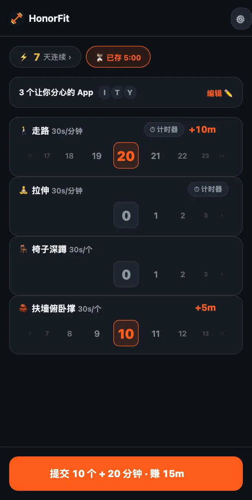

做不了俯卧撑？用低冲击运动解锁你的 App
嗨大家好！HonorFit 最常被当成俯卧撑 App 屏蔽工具（英文）：你的 App 会一直锁着，直到你做完几个、自己记录下来。但如果你的手腕、肩膀或膝盖不太喜欢俯卧撑，或是你整天坐办公桌，或是现在就是做不了俯卧撑，那也完全没问题。
对我来说，重点从来就不是俯卧撑。重点是在你和刷手机之间放一个小小的减速丘，而它刚好对你有好处。绕着街区走一圈也一样有效。下面教你怎么用你真的做得到的运动来设置 HonorFit。
先从内置的开始
一开始就有四种内置运动：俯卧撑、仰卧起坐、引体向上和深蹲。其中最温和的是深蹲，每一个值 30 秒。
而且因为是诚信制（英文），没有人会检查你的深蹲长什么样子。如果完整的深蹲太吃力，从椅子上站起来再坐下也算一下。俯卧撑也一样，可以撑着墙壁或厨房流理台做。一下算什么由你决定，你只要诚实记录就好。
自己挑（最多 3 个免费）
从 1.15.0 版开始，改名、删除运动项目、设置每一项能赚多少，还有添加最多 3 个自己的运动，全部免费。Pro（在美国是每月 3 美元或一次买断 19.99 美元；各国价格和币种不同，商店会显示你当地的价格）则可以想加几个就加几个。从首页的齿轮进去，再点运动项目卡片就到了。编辑界面的每个步骤我都写在这里了。下面是我会考虑的几类。
计时运动（用分钟记录）
把任何运动项目切成分钟，或点一个有 ⏱ 的建议项目。适合这里的有：
- 🚶 走路。这是我最推荐的。大概是最容易做到的了。
- 🧘 瑜伽或🤸 普拉提，如果你做的比较像是拉筋，也可以添加一个叫伸展的项目。
- 🏊 游泳和🚴 骑车，两个对关节都很友善。
- 🪷 冥想。不算运动，但清单里有，而且用安静的十分钟换十分钟 TikTok，算是很划算的交易。
计时运动从每分钟换 30 秒 App 时间开始，所以走 20 分钟可以赚 10 分钟。滚轮以整分钟计算，一次最多 100 分钟。
办公桌就能做的动作（用次数记录）
点＋ 添加运动项目，打上名称。几个在办公室或小套房也能做、不需要器材的：
- 椅子深蹲（坐站练习）：从椅子上站起来，再坐回去。
- 扶墙俯卧撑或扶桌俯卧撑：撑着墙壁或稳固的桌子做俯卧撑。撑的位置越高越轻松。
- 提踵：踮起脚尖，再放下来。等微波炉的时候就能做。
- 原地踏步：就是推荐列表里的高抬腿，只是放慢。想改名就改。
- 臀桥和凯格尔运动：安静、不需要器材，而且凯格尔运动在开会时做也没人知道。我为这两个写了一整篇。
撑住不动的运动（平板支撑、靠墙蹲）
因为分钟滚轮是以整分钟计算，20 秒的平板支撑不太适合放在那里。我会把这类运动维持在次数，自己决定一下代表什么，例如“撑 20 秒算一下”。平板支撑和靠墙蹲都在推荐列表里。
每一项该赚多少？
新的运动项目从每一个 30 秒开始，每次可以加减 5 秒。几个出发点：
| 运动项目 | 计算方式 | 可赚 | 举例 |
|---|---|---|---|
| 🚶 走路 | 分钟 | 每分钟 30 秒 | 走 20 分钟 = 10 分钟 |
| 🧘 伸展 | 分钟 | 每分钟 30 秒 | 10 分钟 = 5 分钟 |
| 🪑 椅子深蹲 | 次数 | 每个 30 秒 | 10 个 = 5 分钟 |
| 🧱 扶墙俯卧撑 | 次数 | 每个 30 秒 | 10 个 = 5 分钟 |
| 提踵 | 次数 | 每个 10–15 秒 | 每个 15 秒做 20 个 = 5 分钟 |
| 平板支撑 | 次数（1 个 = 撑 20 秒） | 每个 1 分钟 | 撑 3 次 = 3 分钟 |
这些只是我觉得公平的猜测。对的数字，是你会老实付、而不会想灌水的那个。如果走路是你最想养成的习惯，就让它值多一点，例如每分钟 1 分钟。

几组可以直接抄的设置
- 坐办公桌的日子：椅子深蹲、扶墙俯卧撑、提踵、走路。
- 温和版：走路、伸展、椅子深蹲、扶墙俯卧撑（就是上面那张截屏）。
- 放松版：走路、瑜伽、冥想。
- 安静的小套房：臀桥、凯格尔运动、椅子深蹲、走路。
我会建议保持三到四个，因为每一个在首页都有自己的滚轮。免费版也能凑到四个：把内置运动改名（深蹲改成椅子深蹲、俯卧撑改成扶墙俯卧撑），其余的当成你的 3 个自定义运动加进去。
还有，如果你有受伤、疼痛或健康上的状况，请先问你的医师或物理治疗师什么运动适合你。我是做 App 屏蔽工具的，膝盖的问题真的不该问我。
HonorFit Blocker 是 iPhone 和 Android 上的免费 App 屏蔽工具。诚信制、不用摄像头，数据都不会离开你的手机。计时运动和最多 3 个自定义运动都免费，Pro 则没有上限。它不是适合每个人，但也许你们有些人会喜欢它！